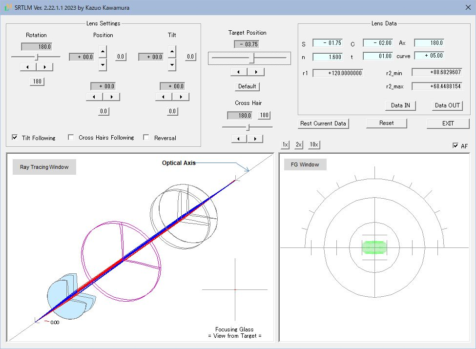

SRTLM Lens Meter Simulation Tool
Overview
When it comes to lens meters, auto lens meters are the mainstream these days, and there may be people who have never used manual lens meters before. I think that the lens meter itself is still an essential item for those who work with eyeglasses.
I created a simulation tool with the hope that you would learn the properties of eyeglass lenses through a manual lens meter.
Hereafter abbreviated as SRTLM.
If you would like to know about lens meters and eyeglass lens roughly, see about Lens Mater.
See SRTLM Document for the explanation of SRTLM.
Features
-
Measurement of single vision lenses (spherical and toric) can be simulated.
-
Focusing of lens
-
The movement of the corona image (*) accompanying the movement of the lens (vertical movement, horizontal movement and rotation), the rotation of the focusing glass, the occurrence of astigmatism due to the tilt of the lens, etc.
*The corona image consists of a small disk called a target that moves back and forth along the optical axis, and has 36 concentric pinholes. A bundle of rays passing through a pinhole is visualized as an image with a focusing glass. There are also types of targets that combine corona target and a cross target (cross slit). This tool assumes only corona targets.
-
-
You can check the shape of the test lens.
-
The test lens is rendered in 3D, including sections along the strong/weak principal meridians.
-
-
Ray tracing is reproduced in 3D
-
How rays emitted from the target form an image on the focusing glass is simulated.
-
Movement, rotation, and tilt of the test lens are reproduced in real time.
-
* Ray tracing cannot be seen with the actual lens meter
Since SRTM is a simulation tool, it draws ray traces.
-
-
You can create, save, and recall the lens you want to simulate.
-
It can be specify the spherical power, cylindrical power, axis direction of the cylindrical lens, refractive index, center thickness, and front curve.
-
The created lense can be saved and loaded.
-
Shows the screen at startup.

Download
This tool is FREEWARE.
Installation
Unzip "SRTM_En.zip".
After unzipping, "SRTM_En" folder will appear.
A set of necessary data is stored in the "SRTM_En" folder.
For further details, please read "readme_en.html" in the folder.
Uninstallation
Delete the "SRTM_En" folder. This completes the removal.